The Windows
Spaceward Ho! has lots of windows. This is one way we let people with big screens use the whole thing, while making things reasonable for people with itty bitty screens. We let each person decide which windows he likes and wants to have open all the time. Spaceward Ho! automatically saves your window configuration when you quit and restores it the next time you play.
The Help Window
One thing that will make Spaceward Ho! a lot easier to learn is the Help Window. It is our way of giving you a clue about what’s happening when you’re first learning the game. Here’s how it works: If you have questions about something you see on the screen, just point to that something and read the Help Window. Hopefully, it will tell you something brief, useful, and informative. After you’ve become familiar with the game, you’ll want to just leave the Help Window closed. Close it by clicking in its close box. You can open it by choosing “Help Window” from the “Windows” menu.
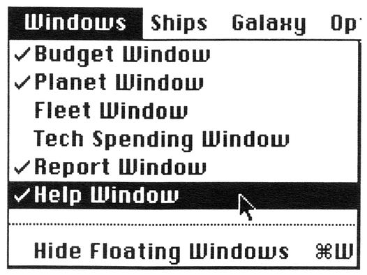
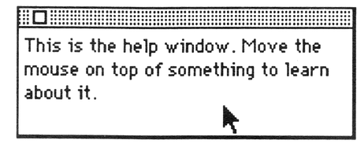
For example, let’s say you’re wondering why the planet in the middle of your screen is wearing a cowboy hat. Just point the mouse at that dude, and read the Help Window.
As of this writing, the Help Window didn’t help with the menus. Sorry, that’s a little trickier. All the menu items are explained in the manual, if you do have questions.
The Star Map
The main window of Spaceward Ho! is the Star Map. It lets you see where you are, where you’ve been, where you can go. You use the Star Map to move ships, and to choose which planet to look at and deal with. You can zoom in and out of the Star Map to give yourself a better view.
There are several kinds of stars you’ll see in the Star Map. Here they are.
A Colonized Planet
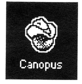
This is a planet where you have established a colony. If it’s a profitable planet, like your original system, it will be green (if you have color). If it’s red, that means it is taking a loss at the moment (meaning you have to put money into it to keep it alive), but given enough time and effort, it could be profitable someday. If it’s pink, that means it’s taking a loss now, and it always will, no matter how much money you throw at it. Generally, this means a planet that’s bigger than 2.0 G or smaller than 0.5 G.
It’s good to have lots of colonized planets. The more profitable planets you have, the more money you make. The more money you make, the more you can spend on research. The higher your technology, the less likely you are to be overrun by an enemy - assuming you have built ships with that higher technology.
Your colonies are the planets that look like good guys.
If you put satellites up at any planet, it will have a circle around it in the star map to let you know it’s defended.
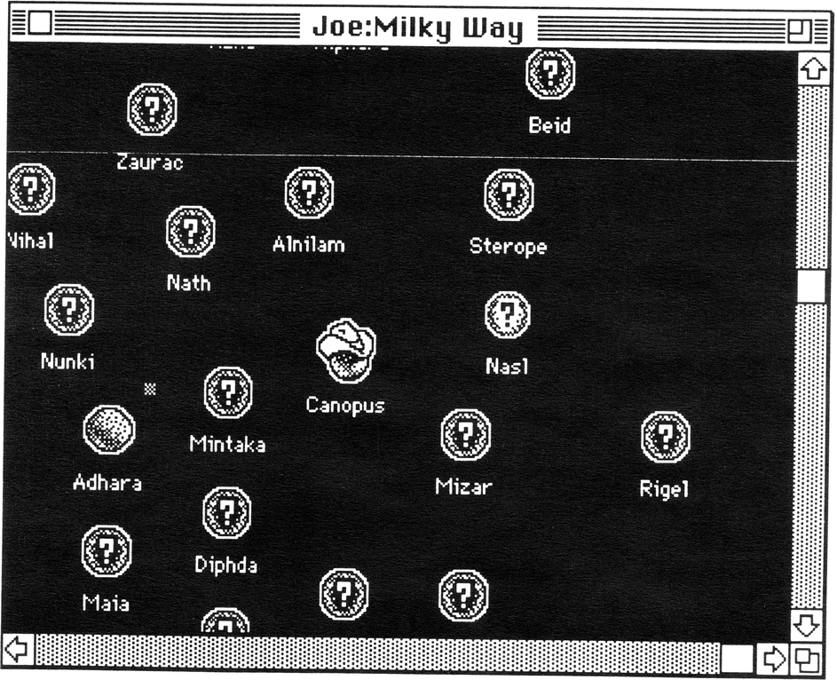
In this Star Map, you own Canopus. You have explored Adhara, and have a fleet there. All of the other stars are unexplored, including Nasl, which looks funny because it is selected.
The title of the window lets you know that your name is Joe, and that the Galaxy (also the file name) is the Milky Way.
An Explored Planet
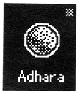
This is a planet that you’ve explored recently, but have not established a colony at. Any planet with a dot next to it has at least one fleet there.
An Unexplored Planet
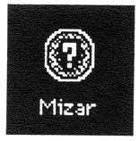
This is a planet that you’ve never been to, or that you haven’t been to for a long time. If it’s the latter, it will be a different color than it would if you had never been there at all, assuming you’re running on a color Macintosh.
An Enemy Planet
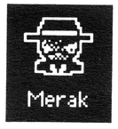
Any planet you lose a battle at becomes an enemy planet. Sometimes there will be no enemy ships or people there, as in when two scouts bump into each other and both die. Sometimes it will be a massive armada. You can get a feel for this by reviewing the battle. If you get a message like, “You were destroyed immediately,” that means there was a big, bad fleet there. Probably. If the battle with your scout was dead even, he probably just had a scout there, too. We’ll tell you about how to review battles later.
Note that a planet will be displayed as an “enemy” until you send another fleet there and win a battle; in fact, you might send a fleet to an enemy planet and find no one there. All the information you have about planets is based on the last time you were there. If it has been a long time since you were at a given planet, the information about that planet may be inaccurate.
Enemy planets look like a wide variety of bad guys.
The Report Window
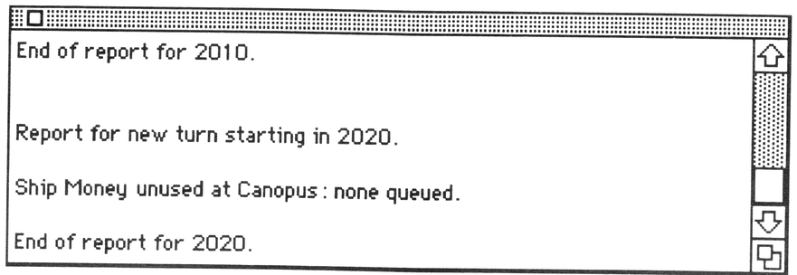
The Report Window gives you a text copy of everything that happens during a turn. When you explore a star, its vital stats will show up here. When you colonize a planet, the Report Window will tell you so. When you review a battle, a transcript will show up here. It’s kind of a catchall for information.
It’s a good idea to review the Report Window every turn, because it will tell you things which aren’t necessarily important enough for a dialog, like a battle, but which you should know. For example, if you queue up ships to be built at a certain star, but forget to budget money for shipbuilding, you’ll get a meaningful message telling you that you aren’t spending much money on ships. If you can’t build any more ships because you don’t have enough metal, you’ll get a message about that. Or, like our example, you’ll get a message telling you that you’re spending money, but aren’t building ships because the planet doesn’t have any more queued up. And so on.
We’ve provided a couple shortcuts to help get at the fleets or planets mentioned in the Report Window. Using the mouse, select the name of a planet or fleet. Spaceward Ho! will automatically select that star or fleet and open the star and/or fleet window if they aren’t already open.
If you’re feeling short on space but don’t want to forget to read the Report Window each turn, use the “Show Report Window” option in the “Options” menu. If checked, this will automatically open the Report Window at the beginning of each turn, even if you had closed it previously.
The Budget Window
This is the window you use to set how much money each planet gets. It is very important. It tells you how much money you’re making, how much you have, what year it is, how many planets you have, how you’re spending your money, and stuff like that.
The stuff on the left of the window is there solely for informative purposes. You can’t change it directly. (“I think I’ll just give myself some more money!”) The main thing you change is the bar chart on the right.
The Bar Charts
The most important controls you have in Spaceward Ho! are your bar charts. They are what you use to divide up your spending and implement your strategy. Unlike bar charts you see on overheads during business presentations, you can actually change the bar charts in Spaceward Ho!.
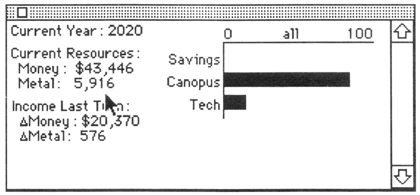
For example, the Budget Window bar chart permits you to divide all the money you make each turn between each of your colonies and technology research. The bigger the bar to the right of a planet name, the greater the percent of your total budget that goes into that planet. Clicking the mouse in the area designated for the bar will lengthen/shorten the bar to where you clicked, adding or subtracting from other bars proportionally.
Or, for example, if you want to spend the same amount on Tech and your planet, just click and drag directly on the Tech bar. As you move the mouse around, you’ll notice the Tech bar go up as the others go down, and down as the others go up. Set it so that your Tech bar and your colony bar are the same length.
It is important not to get caught up in the actual number of dollars being spent in each area. We have gone through a great deal of effort to make sure that the game does reasonable things when you spend too much money in an area, and to warn you if you spend too little. Just try to get the vague things right, and don’t worry about the specifics.
A lot of people asked us to give the actual percentages specified by the bar charts, and we did try playing it that way. Trust us, it subtracted from the fun of the game. It’s much, much better the way it is. Honest.
Each of the bars in the Budget Window can be broken down into smaller bar charts. For example, click on the word “Tech” in the Budget Window. The Tech Window will pop up. This is a detailed, specific view of your Tech spending and isn’t worth anything by itself. Even if you spend 100% of your Tech money on Range Tech, this isn’t worth anything unless you’ve allocated some of your budget for Technology Research. A hundred percent of nothing is still nothing. We’ll tell you more about the Tech Window later.
Back to the Budget Window
So, using the bar charts, you can determine what percentage of your income is to be spent on savings, technology, and any planets you own. In the picture, about 85% of the money is being spent on Canopus, while about 15% is being spent on Technology research.
Savings is money that will be saved until next turn. Money will be saved automatically if you don’t spend it, too. For example, if you are spending all your money on Canopus for shipbuilding (like we are in the example), but you don’t have any ships queued at Canopus, the money will be saved for later. Any time money is saved like this, there will be a brief note about it in the Report Window. In general, don’t bother saving money unless you have a reason.
You can click on the name of a star in the Budget Window to scroll the Star Map to that star and select it. If you double click on the star name, or the star itself in the Star Map, you will open up its Planet Window.
When you have colonized a lot of stars, you’ll notice that your Budget Window gets long. You’ll end up having to scroll around in it to see all your planets. We helped with this problem with the “All” or “Some” feature. Basically, clicking on the word in the top middle of your Budget Window toggles you between whether you can see all of your planets or just the ones you spend money on. It turns out that late in the game that there are a lot of planets which you don’t spend any money on at all (e.g. profitable planets that are already well defended). Since you don’t really care about these “stable” planets, at least as far as money goes, just show Some of your planets. All the things you spend money on, or need to spend money on, will show up in the Budget Window, while those which are unbudgeted and self sufficient don’t.
When you’re done with a turn, the Budget Window will let you know by putting “(done)” after the year. You’ll only see this if you’re in a game with more than one human player.
The Planet Window
The Planet Window has a bar chart that shows how money you spend on a planet is subdivided between mining, terraforming, and shipbuilding. Again, don’t get too concerned about exactly what percent you’re spending on what item; just try to get the generalities right.
Spending money on Terraforming will help modify a planet’s temperature to 72°F (perfect for your race). If a planet is already 72°, you won’t be able to spend money on terraforming. Spending money on Mining will mine some of the planet’s metal resources, making the metal available for shipbuilding. If a planet is out of metal, you won’t be able to mine it any more. Thus there is only one thing to spend money on at a completely terraformed and mined planet: shipbuilding.
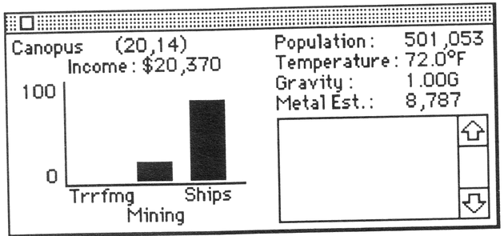
And when you want to build ships, just spending money on shipbuilding at a planet isn’t enough. You still have to set up the shipbuilding queue. The shipbuilding queue is a list of the ships you want to build in the near future at a planet. To set up a queue, just choose “Build Ships...” from the “Ships” menu, and you’ll be able to schedule the next several ships. Read “Building Ships” for more specific information.
The Income of a planet is how much extra money a planet puts into your total budget. If it’s a planet you’ve just colonized, this will be negative, meaning that you have to put money into it just to keep it alive. The closer a planet is to you home planet (which is 72° and 1.00 G), the more money-making potential it has. A planet with money-making potential won’t actually start making a profit, though, until it has a large population. Planets that are too unlike your home planet will never make a profit.
The Tech Spending Window
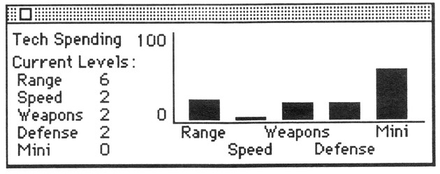
The Tech Spending Window is what you use to divide up the money allocated to Tech in the Budget Window. You may choose to research different technologies, depending on your strategy, philosophy, and the current game situation. For the most part, you don’t need to fool with this window much. Once you decide how you want to spend your research money, you can let it just divide up the money in the same ratios for the rest of the game. Or you can change it.
In the example, Mini (miniaturization) spending is way up, and Speed spending is way down. Remember that the Tech Spending Window just divides up the Tech money, and doesn’t decide how much Tech money there is — that’s decided in the Budget Window.
The Tech Spending Window will also tell you the current status of all your technologies (these are the numbers on the left). You can get this info when you create a new ship type, too.